조선기사 (2012-03-04 기출문제)
1과목: 조선공학일반
1. 용골 상면부터 부심까지의 높이 KB, 부심에서 메타센터까지의 높이 BM, 선박의 중심 높이를 KG라 할 때, 메타센터 높이는?
- KB + BM + KG
- KB + BM - KG
- KB - BM - KG
- KB - BM + KG
(정답률: 알수없음)

2. 모형선을 이용한 저항추정시험으로 저항을 추정하는 과정으로 틀린 것은?
- 모형선-실선 상관 수정값을 고려한다.
- 모형선의 마찰저항계수를 임의의 평판 조와저항계수와 같다고 가정한다.
- 선박의 전저항은 서로 독립적인 마찰저항과 잉여저항 성분으로 나누어 추정한다.
- 프루드수가 일정할 때 실선과 모형선의 잉여저항계수는 같다고 가정한다.
(정답률: 알수없음)
3. 배의 진동을 감소시키는 방법이 아닌 것은?
- 기진력은 가능한 한 크게 한다.
- 프로펠러의 회전수를 적절히 유지한다.
- 감쇠장치와 같은 특수한 장치를 장착한다.
- 국부구조의 고유진동수를 조정함으로써 공진상태를 피한다.
(정답률: 알수없음)
4. 상갑판 상의 상부구조물로서 선수쪽에 위치하며 내파성을 좋게 하는 구조물은?
- 선수루
- 선교루
- 선미루
- 기관실 위벽
(정답률: 알수없음)
5. 기하학적으로 상사한 모형선과 실선에서 모형선 길이 5m, 잉여저항 0.25kg 일 때, 실선의 길이가 100m 이면 실선의 잉여저항은 몇 kg 인가?
- 2000
- 1000
- 442.8
- 5
(정답률: 알수없음)
6. 메터센터높이 1.5m, 황동요 관성반지름 10m인 선박의 고유 횡동요 주기는 약 몇 초인가?
- 3
- 6
- 12
- 16
(정답률: 알수없음)
7. 선체 선도(Lines)의 구성 도면이 아닌 것은?
- 정면도
- 측면도
- 구조도
- 반폭도
(정답률: 알수없음)
8. 1cm 당 트림모멘트가 160ton·m 인 선박에서 100ton 의 화물을 선수 쪽으로 20m 옮겼을 경우 트림의 변화는 몇 cm 인가?
- 11
- 11.5
- 12
- 12.5
(정답률: 알수없음)
9. 구상 선수(球狀 船首)에 의해 기대되는 주된 효과는?
- 마찰저항의 감소
- 조파저항의 감소
- 조와저항의 감소
- 공기저항의 감소
(정답률: 알수없음)
10. 방형비척계수가 일정할 때 주형계수(Prismatic coefficient)가 커진다면 선체 용적분포의 변화로 옳은 것은?
- 분포상 변동이 없다.
- 선수미로 분포하게 된다.
- 중앙으로 집중하게 된다.
- 위쪽으로 집중하게 된다.
(정답률: 알수없음)
11. 일반적으로 선박의 선수부에 위치하는 구조 부재 또는 구획이 아닌 것은?
- 선수 촉(Bow chock)
- 벨 마우스(Bell mouth)
- 체인 로커(Chain locker)
- 트랜섬 늑판(Transom floor)
(정답률: 알수없음)
12. 다음 중 고속 선형 설계 시 가장 중요하게 고려해야 할 저항은?
- 공기저항
- 마찰저항
- 조파저항
- 점성저항
(정답률: 알수없음)
13. 현측외판(Sheer strake)을 옳게 설명한 것은?
- 빌지부 외판의 아랫부분
- 용골과 용골 옆판을 제외한 만곡부 상단까지의 선측부분 외판
- 강력갑판에 접하여 배치되는 두꺼운 1줄의 선측외판재
- 배의 중앙부에서 배 길이의 반 이상에 걸쳐 선체의 주요부를 구성하는 최상층 갑판
(정답률: 알수없음)
14. 다음 중 이중저 구조의 장점이 아닌 것은?
- 선저 파손시 선내의 침수를 막을 수 있다.
- 견고한 선저구조로 종강력이 높아 내항성을 증진시킬 수 있다.
- 트림 및 배의 중심을 조절하여 복원성을 높일 수 있다.
- 구조가 간단하여 재화중량이 높아져 수익성을 높일 수 있다.
(정답률: 알수없음)
15. 선박의 경사시험시 이동 중량의 이동거리가 26m 일 때 경사각을 1°로 하려면 필요한 이동 중량물은 최소한 약 몇 ton 이 필요한가? (단, 이 배의 추정중량 7000ton, 메타센터 6m 이다.)
- 24
- 28
- 35
- 40
(정답률: 알수없음)
16. 본전 곡선(Bonjean's curve)의 용도로 옳은 것은?
- 선박 선수미의 복원력
- 선박 기본설계 시 선형 및 선도 작성
- 선박의 각 횡단면의 침수 부분의 면적
- 선박의 외판괴 그 밖의 부가물의 용적
(정답률: 알수없음)
17. 다음 중 정복원력곡선도로 직접 알 수 없는 것은?
- 메터센터 반경
- 메터센터 높이
- 최대 복원력 각도
- 복원력 소멸 각도
(정답률: 알수없음)
18. 다음 중 진동감소를 위한 장치는?
- 빌지 킬
- 안티롤링 탱크
- 댐핑 마운트
- 자이로스코프 안정기
(정답률: 알수없음)
19. 다음 중 일반적으로 가장 작은 방형계수(Block coefficient)를 갖는 선박은?
- 구축함
- 컨테이너선
- 유조선
- 광물운반선
(정답률: 알수없음)
20. 선박의 구조양식 중 횡식구조(Transverse system)의 특징으로 틀린 것은?
- 선체의 중량이 가볍다.
- 구조가 간단하고 건조하기 쉽다.
- 창내의 늑골이나 보의 돌출이 적다.
- 화물선, 객선의 구조양식으로 적합하다.
(정답률: 알수없음)
2과목: 재료역학
21. 그림과 같은 1축 응력(응력치: σ, σ는 y축 방향) 상태에서 재료의 Z-Z 단면(x축과 45° 반시계 방향 경사)에 생기는 수직응력 σn, 전단응력 τn의 값은?
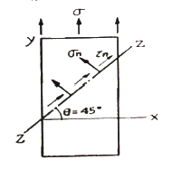
- σn = σ, τn = σ
- σn = σ, τn = σ/2
- σn = σ/2, τn = σ
- σn = σ/2, τn = σ/2
(정답률: 알수없음)
22. 양단이 고정단이고 길이가 직경의 10배인 주철 재질의 원주가 있다. 이 기둥의 임계응력을 오일러 식을 이용해 구하면 얼마인가? (단, 재료의 탄성계수는 E 이다.)
- 0.266E
- 0.0247E
- 0.0⑤47E
- 0.00146E
(정답률: 알수없음)
23. 그림과 같이 두께가 20mm, 외경이 200mm인 원관을 고정벽으로부터 수평으로 돌출시켜 원관에 물을 충만시켜서 자유단으로부터 물을 방출시킨다. 이 때 자유단의 처짐이 5mm라면 원관의 길이 ℓ는 약 몇 cm 인가? (단, 원관 재료의 탄성계수 E = 200GPa, 비중은 7.8 이고 물의 밀도는 1000 kg/m3 이다.)
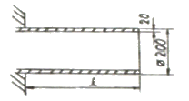
- 130
- 230
- 330
- 430
(정답률: 알수없음)
24. 그림과 같이 원형단면을 갖는 연강봉이 100kN의 인장하중을 받을 때 이 봉의 신장량은? (단, 탄성계수 E = 200GPa 이다.)
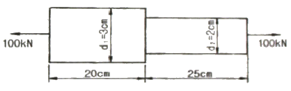
- 0.⑤4 cm
- 0.162 cm
- 0.236 cm
- 0.302 cm
(정답률: 알수없음)
25. 단면이 가로 100mm, 세로 150mm인 사각 단면보가 그림과 같이 하중(P)을 받고 있다. 허용 전단응력이 τa = 20MPa 일 때 전단응력에 의한 설계에서 허용하중 P는 몇 kN 인가?
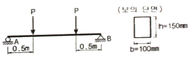
- 10
- 20
- 100
- 200
(정답률: 알수없음)
26. 그림과 같이 단순 지지보에서 길이는 5m, 중앙에서 집중하중 P가 작용할 때 최대 처짐은 약 몇 mm 인가? (단, 보의 단면(폭 × 높이 = b × h)은 5cm × 12cm, 탄성계수 E = 210 GPa, P = 25 kN 으로 한다.)
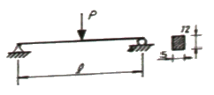
- 83
- 43
- 28
- 65
(정답률: 알수없음)
27. 그림과 같은 직사각형 단면의 보에 P = 4kN의 하중이 10° 경사진 방향으로 작용한다. A점에서의 길이 방향의 수직응력을 구하면 몇 MPa 인가?
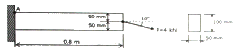
- 5.89(압축)
- 6.67(압축)
- 0.79(인장)
- 7.46(인장)
(정답률: 알수없음)
28. 길이가 L인 양단 고정보의 중앙점에 집중하중 P가 작용할 때 중앙점의 최대 처짐은? (단, 보의 굽힘강성 EI는 일정하다.)
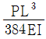
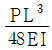
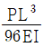
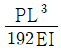
(정답률: 알수없음)
29. 길이 1m인 단순보가 아래 그림처럼 q = 5kN/m의 균일 분포하중과 P = 1kN의 집중하중을 받고 있을 때 최대 굽힘 모멘트는 얼마이며 그 발생되는 지점은 A점에서 얼마되는 곳인가?
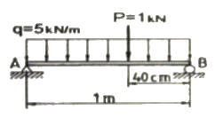
- 48cm 에서의 241 N·m
- 58cm 에서의 620 N·m
- 48cm 에서의 800 N·m
- 58cm 에서의 841 N·m
(정답률: 알수없음)
30. 외경이 내경의 1.5배인 중공축과 재질과 길이가 같고 지름이 중공축의 외경과 같은 중실축이 동일 회전수에 동일 동력을 전달한다면, 이때 중실축에 대한 중공축의 비틀림각의 비는?
- 1.25
- 1.50
- 1.75
- 2.00
(정답률: 알수없음)
31. 다음과 같은 압력 기구에 안전 밸브가 장치되어 있따. 이때 스프링 상수가 k = 100kN/m 이고 자연상태에서의 길이는 240mm라 한다. 몇 kN/m2의 압력에 밸브가 열리겠는가?
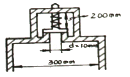
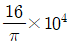
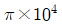
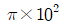
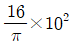
(정답률: 알수없음)
32. 그림과 같은 집중하중을 받는 단순 지지보의 최대 굽힘 모멘트는? (단, 보의 굽힘강성 EI는 일정하다.)
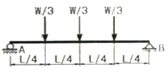
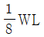
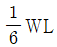
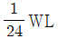
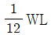
(정답률: 알수없음)
33. 코일스프링에서 가하는 힘 P, 코일 반지름 R, 소선의 지름 d, 전단탄성계수 G라면 코일 스프링에 한번 감길때마다 소선의 비틀림각 ø를 나타내는 식은?
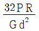
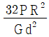
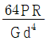
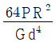
(정답률: 알수없음)
34. 지름 d인 환봉을 처짐이 최소가 되도록 직사각형 단면의 보를 만들 경우 단면의 폭 b와 높이 h의 비(h/b)는?
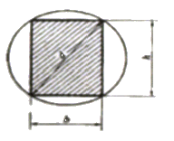
- 1
- √2
- √3
- √5
(정답률: 알수없음)
35. 철도용 레일의 양단을 고정한 후 온도가 30℃에서 15℃로 내려가면 발생하는 열응력은 몇 MPa 인가? (단, 레일재료의 열팽창계수 a = 0.000012/℃ 이고, 균일한 온도 변화를 가지며, 탄성계수 E = 210GPa 이다.)
- 50.4
- 37.8
- 31.2
- 28.0
(정답률: 알수없음)
36. 짧은 주철재 실린더가 축방향 압축 응력과 반경 방향의 압축 응력을 각각 40MPa과 10MPa를 받는다. 탄성계수 E = 100GPa, 포아송 비 ν = 0.25, 직경 d = 120mm, 길이 L = 200mm 일 때 지름의 변화량은 약 몇 mm 인가?
- 0.001
- 0.002
- 0.003
- 0.004
(정답률: 알수없음)
37. 굽힘하중을 받고 있는 선형 탄성 균일단면 보의 곡률 및 곡률반경에 대한 설명으로 틀린 것은?
- 곡률은 굽힘모멘트 M에 반비례한다.
- 곡률반경은 탄성계수 E에 비례한다.
- 곡률은 보의 단면 2차 모멘트 I에 반비례한다.
- 곡률반경은 곡률의 역수이다.
(정답률: 알수없음)
38. 양단이 고정된 축을 그림과 같이 m-n 단면에서 비틀면 고정단에서 생기는 저항 비틀림 모멘트의 비 TB/TA는?
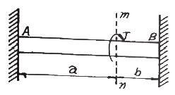
- ab
- b/a
- a/b
- ab2
(정답률: 알수없음)
39. 진변형률(εT)과 진응력(σT)을 공칭 응력(σn)과 공칭 번형률(εn)로 나타낼 때 옳은 것은?
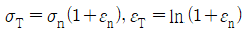
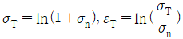
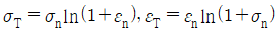
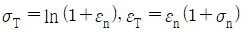
(정답률: 알수없음)
40. 그림에서 W1과 W2가 어느 한쪽도 내려가지 않게 하기 위한 W1 : W2의 크기의 비는 어느 것인가? (단, 경사면의 마찰은 무시한다.)
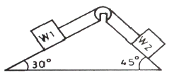
- W1 : W2 = sin30° : sin45°
- W1 : W2 = sin45° : sin30°
- W1 : W2 = cos45° : cos30°
- W1 : W2 = cos30° : cos45°
(정답률: 알수없음)
3과목: 조선유체역학
41. 비중이 0.9인 액체 20리터의 무게는 몇 N 인가?
- 18.0
- 22.2
- 176.4
- 218.0
(정답률: 알수없음)
42. 공기 중을 전진하는 날개면에 작용하는 항력은 어떤 변수의 함수인가?
- 프루드(Froude)수와 오일러(Euler)수
- 레이놀드(Reynolds)수와 마하(Mach)수
- 레이놀드(Reynolds)수와 프루드(Froude)수
- 레이놀드(Reynolds)수와 스트러헐(Strouhal)수
(정답률: 알수없음)
43. 정수 중 떠 있는 선박이 상하동요를 하고 있다. 이 선박의 상하동요 고유주기를 계산하면 공기 중에서 상하동요 할 때 보다 고유주기가 길어지게 되는데, 다음 중 어떤 항목이 추가로 고려되기 때문인가?
- 부가질량
- 감쇠력
- 복원력
- 기진력
(정답률: 알수없음)
44. 마하수는 어떤 물리량을 기준으로 한 무차원수인가?
- 관성력/점성력
- 관성력/중력
- 관성력/압축력
- 관성력/표면장력
(정답률: 알수없음)
45. 층류에 놓인 날개에 작용하는 양력을 포텐셜이론으로 계산하여도 결과값이 잘 맞는 이유가 아닌 것은?
- 경계층이 얇기 때문에
- 박리가 일어나지 않기 때문에
- 점성을 무시할 수 있기 때문에
- 경계층 내의 압력구배가 작기 때문에
(정답률: 알수없음)
46. 점성계수가 1.15×10-3 Pa·s 인 유체가 반지름 30mm인 원형관속을 흐르고 있을 때 층류유동이 기대될 수 있는 최대 유량은 약 몇 m3/s 인가? (단, 유체밀도는 940kg/m3이고, 층류유동의 레이놀드수의 상한값은 2100 이다.)
- 7.312×10-6
- 6.093×10-5
- 1.218×10-4
- 2.436×10-4
(정답률: 알수없음)
47. 다음 중 체적탄성계수에 대한 설명으로 옳은 것은?
- 온도와 무관하다.
- 압력에 따라 증가한다.
- 압력과 점성에 무관하다.
- 압력의 역수 차원을 가진다.
(정답률: 알수없음)
48. 수위가 h인 수차에서 바닥 측면에 면적 A의 구멍을 내었을 때 분출되는 물의 속도가 V라면 수차가 얻는 추력은? (단, 물의 밀도 ρ, 유량 Q 이다.)
- ρAV
- ρghV
- ρQV
- √2 ρghA
(정답률: 알수없음)
49. 다음 중 표준대기압을 나타내는 것이 아닌 것은?
- 760mmHg
- 101325 N/m2
- 1.013 bar
- 1.0336 mAq
(정답률: 알수없음)
50. 다음 중 차원해석의 장점이 아닌 것은?
- 실험의 효율성 향상
- 모형과 원형과의 상사율 제공
- 무차원 변수들간의 구체적인 관계식 제공
- 이론과 실험에 있어서의 사고의 편의성 제공
(정답률: 알수없음)
51. 마찰이 없는 관로 유동에 대한 설명으로 옳은 것은?
- 확대 관로에서 속도는 항상 감소한다.
- 축소-확대 노즐의 목에서는 항상 음속과 같다.
- 축소-확대 노즐의 목에서는 음속을 넘을 수 없다.
- 초음속 유동에서는 단면적이 감소함에 따라 속도는 증가한다.
(정답률: 알수없음)
52. 파장이 100m인 파도의 주기는 얼마인가? (단, 중력가속도는 10m/s 이다.)
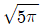
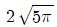
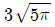
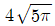
(정답률: 알수없음)
53. 유체의 경계층에 대한 설명으로 틀린 것은?
- 경계층 내에서는 점성의 영향이 크게 작용한다.
- 경계층 내에서는 속도구배가 크게 되어 마찰응력이 감소한다.
- 경계층 바깥에서의 흐름은 이상유체와 유사한 흐름을 한다.
- 경계층 이론은 프란틀(Prandtl)에 의해 전개되었다.
(정답률: 알수없음)
54. 그림과 같이 수문으로 유체가 흘러나갈 때 단위폭당 유량을 주어진 깊이로 표현하면?
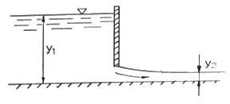
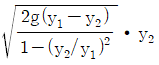
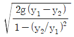
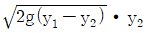
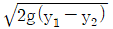
(정답률: 알수없음)
55. 어떤 유체가 그림과 같이 원형유선에 연하여 1.04m/s의 일정한 속도성분을 갖고 운동한다. 유선의 임의 점에서 접선방향의 가속도(as)와 법선방향의 가속도(ar)는 각각 몇 m/s2 인가?
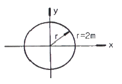
- as = 0, ar = 0.541
- as = 1.04, ar = 1.08
- as = 1.6, ar = 0.541
- as = 0.541, ar = ∞
(정답률: 알수없음)
56. 원형의 1/20인 잠수함 모형을 만들어 저항성능 추정을 위한 예인시험을 할 때 실함의 속도를 24km/h로 하는 경우, 모형 잠수함의 속도는 약 몇 km/h 로 해야 하는가? (단, 잠수함은 완전히 부상해서 시험을 한다.)
- 1.2
- 5.4
- 6.2
- 8.6
(정답률: 알수없음)
57. 다음 중 자유표면을 갖는 유체의 흐름에 가장 큰 영향을 주는 것은?
- 양력
- 점성력
- 중력
- 압축력
(정답률: 알수없음)
58. 원형관 내부 유체흐름의 단면상의 전단응력 분포에 대한 설명으로 옳은 것은?
- 단면상 모든 점에서 일정한 분포를 갖는다.
- 관 중심에서 0 이고, 관벽 쪽으로 직선적으로 변한다.
- 단면을 횡단하여 중심에서 최대가 되는 포물선형으로 변한다.
- 관벽에서는 0 이고, 중심으로 갈수록 직선적으로 증가한다.
(정답률: 알수없음)
59. 정지유체에서의 압력에 대한 설명으로 틀린 것은?
- 동일 수평면상에의 유체 압력은 그 크기가 같다.
- 유체의 압력은 접촉하는 벽면에 언제나 접선방향으로 작용한다.
- 밀폐된 용기의 유체에 가한 압력은 같은 세기로 모든 방향으로 전달된다.
- 유체 내부 임의의 한 점에 작용하는 압력은 모든 방향에서 같다.
(정답률: 알수없음)
60. 다음 중 이상유체의 비회전유동인 수평속도(u)와 수직속도(v)로 이루어진 것은?
- u = y, v = -x
- u = y, v =
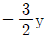
- u = 2x, v = -2y
- u = xy2, v = x2
(정답률: 알수없음)
4과목: 선체의장 및 선체구조역학
61. 컨테이너 전용선에서 창구덮개위에 적재된 컨테이너를 고정시키는데 사용되는 장비가 아닌 것은?
- 심블(Thimble)
- 래싱로드(Lashing rod)
- 턴버클(Turnbuckle)
- 트위스트록(Twistlock)
(정답률: 알수없음)
62. 다음 중 구명정(Life boat)에 비치되는 것이 아닌 것은?
- 닻줄
- 대빗(Davit)
- 신호홍염(Red flare)
- 패러슈트 신호(Rarachute signal)
(정답률: 알수없음)
63. 조타기는 몇 초 안에 타(Rudder)를 한쪽 현 35°에서 다른 쪽 현 30°까지 움직일 수 있어야 하는가?
- 28초
- 30초
- 32초
- 34초
(정답률: 알수없음)
64. 선박의 통풍통(Ventilator) 종류가 아닌 것은?
- 머쉬룸(Mushroom)형
- 구스넥(Gooseneck)형
- 카울 헤드(Cowl head)형
- 로터리 베인(Rotary vane)형
(정답률: 알수없음)
65. 클리트(Cleat)의 용도에 대한 설명으로 옳은 것은?
- 강삭을 잡아당기는데 사용한다.
- 줄의 방향을 바꾸는데 사용한다.
- 앵커를 올리거나 내리는데 사용한다.
- 계류시 밧줄을 걸거나 감기위해 사용한다.
(정답률: 알수없음)
66. 선박의 위치를 선내에서 측정할 수 있는 장치로서 “두 점에서의 거리차가 일정한 점의 자취는 그 두 점을 초점으로 하는 쌍곡선이다.” 라는 원리를 이용한 것은?
- 로랜(Loran)
- 측정의
- 자이로컴퍼스
- 텔레그래프
(정답률: 알수없음)
67. 다음 중 선박에서 사용하는 신호 용구가 아닌 것은?
- 나팔
- 호종(Bell)
- 징(Gong)
- 포그 혼(Fog horn)
(정답률: 알수없음)
68. 대형선의 앵커(Anchor)로 가장 많이 사용되며 스톡이 없고 취급과 격납이 편리한 앵커는?
- 스톡 앵커(Stock anchor)
- 댄포스 앵커(Danforth anchor)
- 머쉬룸 앵커(Mushroom anchor)
- 스톡리스 앵커(Stochless anchor)
(정답률: 알수없음)
69. 정격하중이 6ton 이고 권상속도가 9 m/min 인 윈치(Winch)의 유효마력은 몇 ps 인가?
- 10
- 12
- 15
- 20
(정답률: 알수없음)
70. 스위블(Swivel)의 주된 역할에 대한 설명으로 옳은 것은?
- 닻줄의 꼬임을 방지한다.
- 닻줄을 연결하는 연결용 부품이다.
- 스터드와 같이 닻줄 안으로 닻줄이 끼는 것을 방지한다.
- 닻과 닻줄을 연결하는 연결용 섀클과 기능이 동일하다.
(정답률: 알수없음)
71. 다음 중 선체의 횡강도를 증가시키는 방법으로 가장 적절한 것은?
- 용골의 단면적을 증가시킨다.
- 횡늑골 간격을 감소시킨다.
- 갑판 면적을 증가시킨다.
- 종통재를 많이 배치한다.
(정답률: 알수없음)
72. 정수 중 떠있는 선박에서 전단응력이 가장 크게 작용하는 부재는?
- 선체 중앙부 상갑판
- 선체 중앙부 홀수선 부근 외판
- 선체 길이 방향 1/4 지점의 상갑판
- 선체 길이 방향 1/4 지점의 중립축 부근 외판
(정답률: 알수없음)
73. 선체를 직사각형 단면의 박스형 구조로 생각할 때 이 단면의 단면2차 모멘트는 약 몇 m4 인가? (단, 박스의 높이는 10m, 폭은 15m 이고 두께는 0.1m 이다.)
- 72.5
- 78.2
- 89.2
- 92.6
(정답률: 알수없음)
74. 다음 중 선수부가 파면에 충돌하여 높은 충격압력이 발생되는 슬래밍(Slamming) 현상이 발생하기 쉬은 선박은?
- 유조선
- 산적화물선
- 자동차 운반선
- 컨테이너선
(정답률: 알수없음)
75. 그림과 같이 두께가 얇은 파능로 된 원(반경 : r)과 이에 외접하는 정3각형 및 정4각형 모양의 단면을 갖는 부재가 있다. 비강도가 작은 것부터 큰 순서로 배열된 것은? (단, 두께 t는 동일하며, 국부적인 응력집중은 무시한다.)
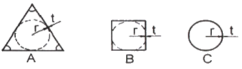
- A-B-C
- C-B-A
- B-C-A
- A-C-B
(정답률: 알수없음)
76. 다음 중 선체의 횡강도 변형을 가장 크게 유발하는 현상은?
- Racking
- Heaving
- Panting
- Sagging
(정답률: 알수없음)
77. 선박의 전단력선도가 그림과 같은 모양일 때 굽힘모멘트 선도로 가장 적합한 것은?
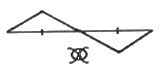
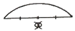
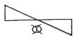
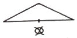
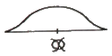
(정답률: 알수없음)
78. 그림과 같이 균일 인장응력을 받는 판의 최대응력이 발생하는 점은?
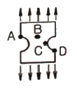
- A
- B
- C
- D
(정답률: 알수없음)
79. 선체운동 중 선체 종강도의 동적효과에 가장 크게 영향을 미치는 것은?
- Rolling
- Pitching
- Surging
- Yawing
(정답률: 알수없음)
80. 4변 단순지지된 직사각형 평판의 좌굴 거동에 대한 설명으로 틀린 것은?
- 좌굴이 발생하면 판의 중앙부에 가장 큰 응력이 걸린다.
- 평판은 탄성좌굴 후 즉시 불안정 급속 파괴로 이어지지 않는다.
- 평판의 초기 변형이 0.3t 이하이면 좌굴강도에 영향이 거의 없다.
- 수압에 의한 평판의 변형은 좌굴 임계하중에 영향을 주지 않는다.
(정답률: 알수없음)
5과목: 선박건조공학 및 선박동력장
81. 다음 중 용접열을 분산하여 잔류응력을 적게 하는데 가장 적합한 용착법은?
- 전진법
- 대칭법
- 비석법
- 후퇴법
(정답률: 알수없음)
82. 다음 중 세미탠덤(Semi-tandem)식 건조법의 주요 목적은?
- 강재 절감
- 노천공사 감소
- 고소 작업배제
- 건조독의 효율증가
(정답률: 알수없음)
83. 선체 건조용 강재에 대한 숏 블라스트(Shot blast) 작업을 위한 가장 적절한 시기는?
- 탑재 직후
- 절단작업 직전
- 용접 직전
- 숍 프라이머 도포 직전
(정답률: 알수없음)
84. 선대위의 공사량을 감소시키기 위해 지상의 조립정반 위에서 선체 분할제작하는 블록건조 방식의 장점이 아닌 것은?
- 선대기간을 단축할 수 있다.
- 고소작업의 위험을 감소시킬 수 있다.
- 공정과 공작기술의 관리 감독이 용이하다.
- 선대의 현장 용접이 많아지므로 용접변형을 감소시킬 수 있다.
(정답률: 알수없음)
85. 녹 발생을 방지하기 위해서 표층부에 부동태를 형성하여 녹슬지 않는 성질을 갖게한 것으로 최근 LNG선에 수요가 많은 재료는?
- 동
- 알루미늄강
- 주석
- 스테인리스강
(정답률: 알수없음)
86. 다음 중 조립용 지그(Jig)로 사용되지 않는 것은?
- 웨지(wedge)
- 눈틀림 고치기
- 문형(門形) 피스
- 백킹 스트립(Backing strip)
(정답률: 알수없음)
87. 다음 중 선체 블록 분할 시 고려할 사항이 아닌 것은?
- 크레인 능력
- 시운전 시점
- 선대 공작상의 조건
- 지상 조립의 공작 및 회전 조건
(정답률: 알수없음)
88. 선박의 러더 스톡의 재료로 주로 사용되는 강재는?
- 주철
- 단조강
- 주강
- 고속도강
(정답률: 알수없음)
89. 플라즈마 절단법에 대한 설명으로 틀린 것은?
- 고밀도의 열원인 플라즈마를 이용하여 국부적으로 강재를 녹여서 고압가스로 불어내어 절단하는 방법이다.
- 플라즈마 아크 방식은 전기전도성이 없는 세라믹이나 플라스틱의 절단에도 사용할 수 있다.
- 가스절단보다 절단 속도가 빠르며 절단변형이 적다.
- 전극으로는 텅스텐, 하프늄, 지르코늄 및 그들의 합금이 사용된다.
(정답률: 알수없음)
90. 선행의장의 장점이 아닌 것은?
- 작업 능률이 향상된다.
- 발판 가설이 적게 든다.
- 건조 독에서 공사 기간이 단축된다.
- 공사 장소가 집결되어 의장공사 관리가 유용하다.
(정답률: 알수없음)
91. 가스터빈의 기본사이클인 브레이튼(Brayton)사이클에 해당하는 것은?
- 단열압축→정적가열→단열팽창→정적방열
- 단열압축→정압가열→단열팽창→정적방열
- 단열압축→정압가열→단열팽창→정압방열
- 단열압축→정적 및 정압가열→단열팽창→정적방열
(정답률: 알수없음)
92. 디젤기간에서 캠의 역할이 아닌 것은?
- 연료 분사량을 제어한다.
- 연료펌프의 작동을 제어한다.
- 흡기밸브의 작동을 제어한다.
- 배기밸브의 작동을 제어한다.
(정답률: 알수없음)
93. 주기관이 디젤기관인 경우 설치해야 하는 보기(補機)가 아닌 것은?
- 시동용 공기압축기
- 주급수 펌프
- 청수(해수) 냉각펌프
- 연료공급펌프
(정답률: 알수없음)
94. 디젤기관에 대한 설명으로 옳은 것은?
- 외연기관이다.
- 불꽃 점화 방식으로 연소시킨다.
- 가솔린 기관보다 진동과 소음이 작다.
- 고압으로 압축된 공기에 연료를 분사한다.
(정답률: 알수없음)
95. 프로펠러 블레이드를 전개하였을 때 블레이드 끝으로 갈수록 회전 방향과 반대방향으로 처지게 하는 것(후연쪽으로 만곡시킨 것)은?
- 경사(Rake)
- 워슈 백(Wash back)
- 스큐 백(Skew back)
- 블레이드 백(Blade back)
(정답률: 알수없음)
96. 축계장치에서 축을 연결할 때 사용하는 플렉시블 커플링(Flexible coupling)의 종류가 아닌 것은?
- 치차커플링
- 유체커플링
- 머프(Muff)형커플링
- 가이스링거(Geislinger)커플링
(정답률: 알수없음)
97. 다음 중 마력당 중량이 가장 적은 것은?
- 증기터빈기관
- 가스터빈기관
- 직결 디젤기관
- 감속기어붙이 디젤기관
(정답률: 알수없음)
98. 시간당 36km의 속력으로 항해하는 선박의 추력베어링에서 추진마력이 4000PS, 추력베어링의 칼러면적이 1000cm2이면 칼러의 단위면적당 추력은 몇 kg/cm2 인가?
- 10
- 30
- 60
- 300
(정답률: 알수없음)
99. 선박 추진축계의 구성요소가 아닌 것은?
- 조속기
- 프로펠러
- 선미관
- 감속장치
(정답률: 알수없음)
100. 다음 중 선체효율을 나타낸 것은? (단, 지시마력 IHP, 제동마력 BHP, 전달마력 DHP, 추진마력 THP, 유효마력 EHP 이다.)
(정답률: 알수없음)